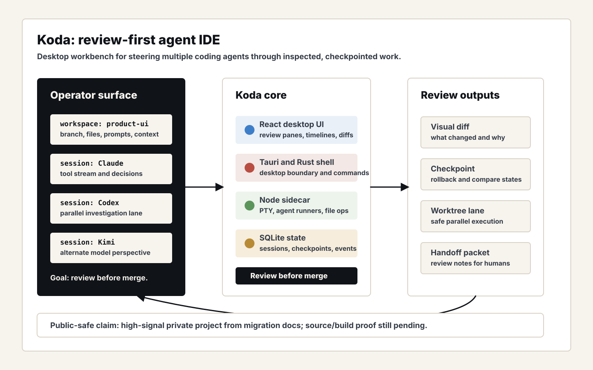
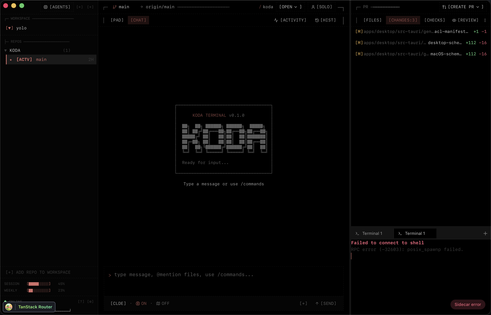
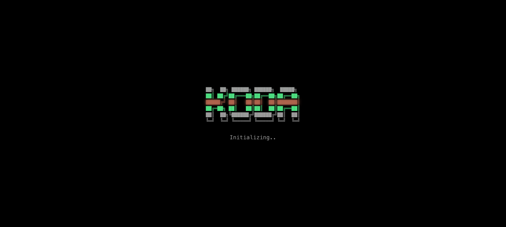

Problem
Modern coding agents can move quickly, but they often leave reviewers with a terminal transcript, a pile of edits, and weak control over competing attempts. The missing product layer is a workbench where the human can see parallel agent lanes, compare outputs, checkpoint progress, and decide what is allowed into the real codebase.
What I Built
Koda is positioned as a desktop review workbench for agent-era development. The private project combines a Tauri desktop shell, React UI, Rust boundary, Node sidecar, agent sessions, PTY management, workspaces, worktrees, SQLite state, checkpoints, and visual diffs.
The project was stopped when Claude removed the third-party access path Koda relied on. The useful signal is still the product and systems work: a real attempt to make agent coding reviewable, stateful, and controllable before the platform boundary changed.



System Architecture
Technical Decisions
- Treat agent work as something to inspect, compare, and checkpoint before accepting.
- Use a desktop shell for local filesystem, PTY, and workspace affordances that browser-only tools struggle to handle cleanly.
- Separate the UI, desktop boundary, sidecar execution, and durable state so each responsibility stays legible.
- Make visual diffs and handoff packets the main review surface, not a secondary afterthought.
What This Proves
Koda is evidence for agent-product judgment: understanding where coding agents are heading, what makes them hard to trust, and how to design the operator layer around review, isolation, and control.